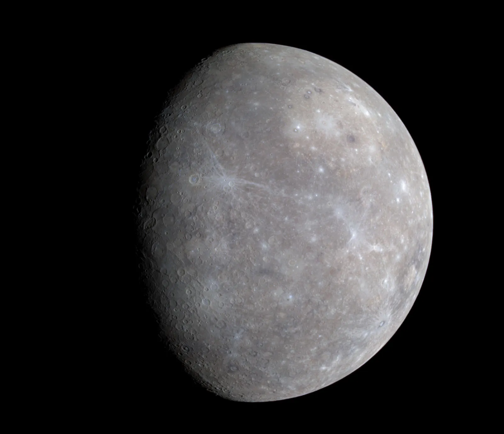
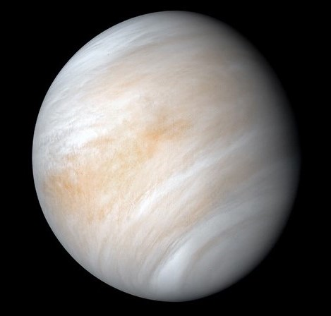
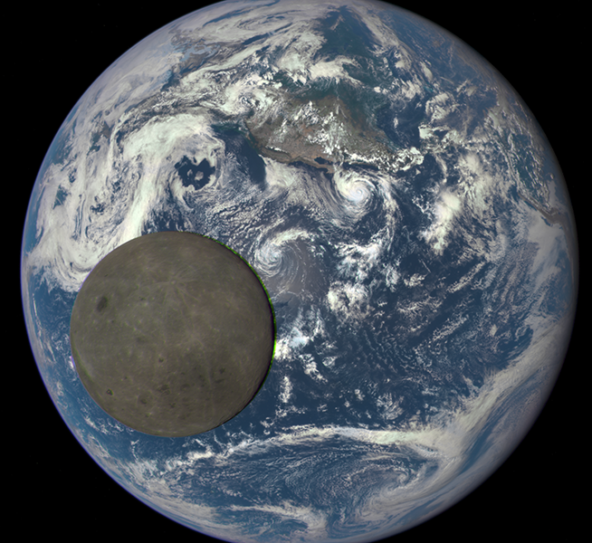
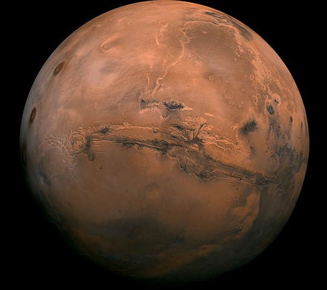
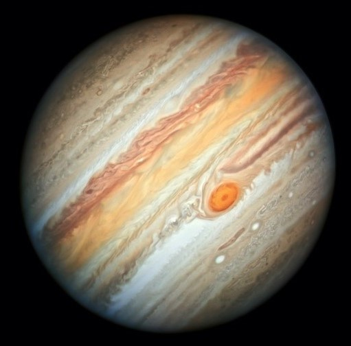
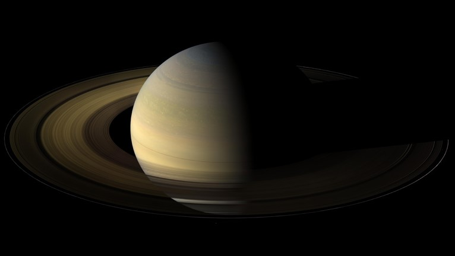
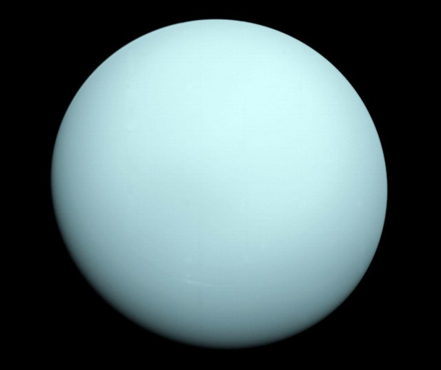
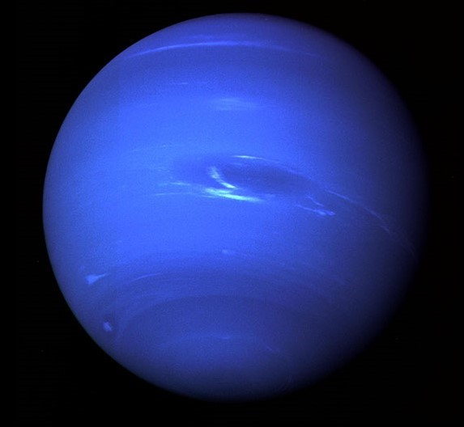

Mercury is the first closest planet to the Sun and is a little more than 1/3 the width of Earth.
Mercury has a slow rotation as it takes 59 Earth days for it to complete one rotation.The lack of atmosphere and close proximity to the sun causes temperatures to reach 800°F(430°C) during the day and as low as -290°F(-180°C) at night.
It is a planet that does not have any moons nor rings. Due to such high temperatures, solar radiation, and an extremely thin and non-protective atmosphere,
it seems unlikely for life to exist on Mercury

Venus is the second closest planet to the Sun and yet it is the hottest planet in
our solar system. It is the second brightest object after the moon at night, in fact it is named after the ancient Roman goddess of beauty for its exceptional brightness.
Venus is a special planet as it spins in the opposite direction of most other planets in our solar system. Ironically one year on Venus takes about 225 Earth days, however one
day there is about 243 Earth days! Sofar neither humans nor spacecrafts are able to survive the planets surface.

Earth is the only planet known that hosts life, 93 million miles away from the sun. It rotates once in about 24 hours as to the sun
and 23 hours, 56 minutes and 4 seconds as to other distant stars. The atmosphere is perfect for living where it is 78% nitrogin, 21% oxygen and 1% other gases,
protecting life from most of what could break up in it before stricking the surface such as meteroids.Eath has one moon and no rings. Because of its unique position in the solar system, it is the only planet that contains water in all forms.

Named for the Roman god of war or known as the Red Planet, Mars is the fourth planet closest to the sun and it takes 24.6 hours for one rotation to be completed but 687 Earth days for one orbit around the sun.It is the second smallest
planet as it is slightly larger than Mercury. Mars has two moons Phobos and Deimos which is the smaller of the two.Many missions are set to determine wether there can be life supported on it or not.
Perseverance was the last mission to land on the surface of Mars on 18 February 2021 at 8.55pm.

Jupiter, a planet that is extremely larger than Earth to the point that it can fit eleven Earths across its equator.
It has twice the amount of mass as the other planets put together. One Juvian day is about 10 hours whereas one Jovian year takes about 12 Earth years. Jupiter is mostly known of its Great Red Spot which is a storm that is twice the size of the Earth and has been going
on for a little over a century. Unlike other planets, it has a dense liquid center and surrounded by mainly Hydrogen (75%), Helium (24%) and other gases.

Saturn is the sixth planet from the Sun as it is 886 million miles away and it is 10 times as wide as Earth.It is a fascinating planet with seven rings around it that are not solid with gaps and divisions between each.
Surprisingly Saturn has a total of 82 moons from which some of them could support life.One complete orbit around the sun takes about 29 Earth days, however one rotation around its axis takes about 10.7 hours. Saturns atmosphere consistes of mainly gas [He and H2]
which means that due to that it can flow in water.

Next is Uranus at a distance of 1.8 billion miles away from the sun, It takes about 84 Earth years to orbit the sun in other words the length of a humans entire life.
If humans could live there, then each season would be experienced once for about 21 years. Uranus is the coldest planet of all due to its distance and surface consisting of water, amonia and methane giving it the icy blue color.
With 13 rings and 27 known moons, It appears that it rolls along its equator un like all planets that spin on their axes like tops.

Neptune is the eighth and most distant planet in our solar system resulting in it having the longest period to orbit the sun (165 Earth years).
It is a dark cold icy planet that is known to not support life. It has a solid core that is the size of one and a half the size of Earth and made of water ice and silicate rock.
Due to its windy atmosphere, winds can reach the speed of 1200 MPH causing to break the sound barier.Surrounded by 14 moons, ofwhich the largest is called Triton named after the son of the ancient Greek sea god.